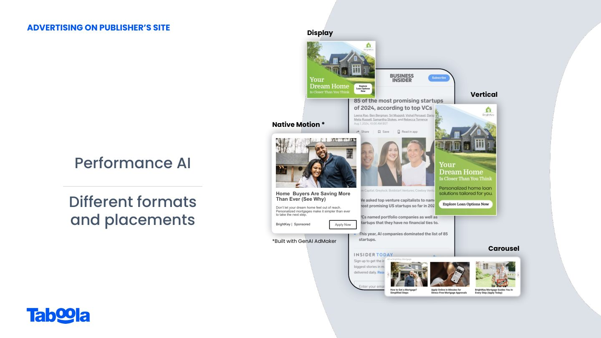
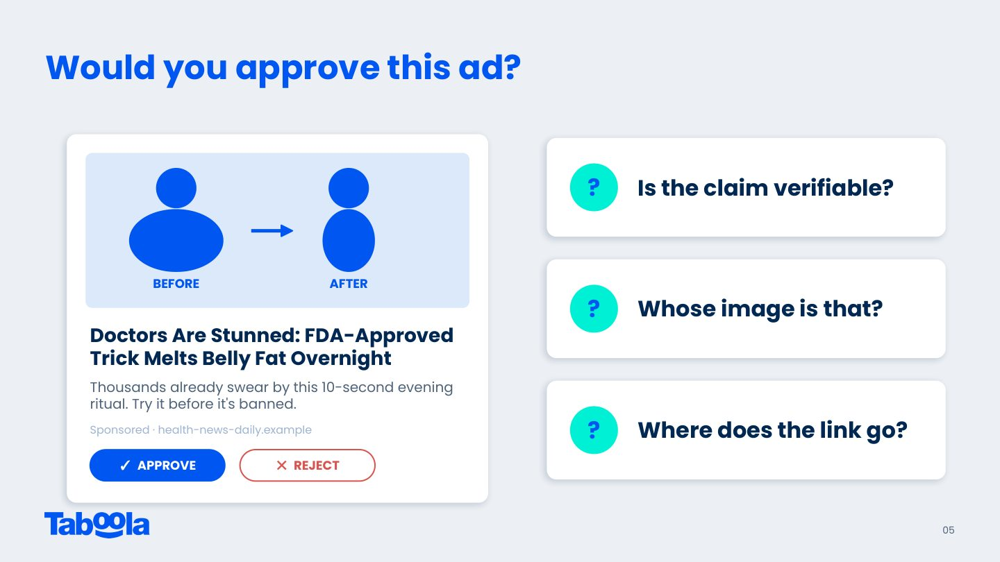
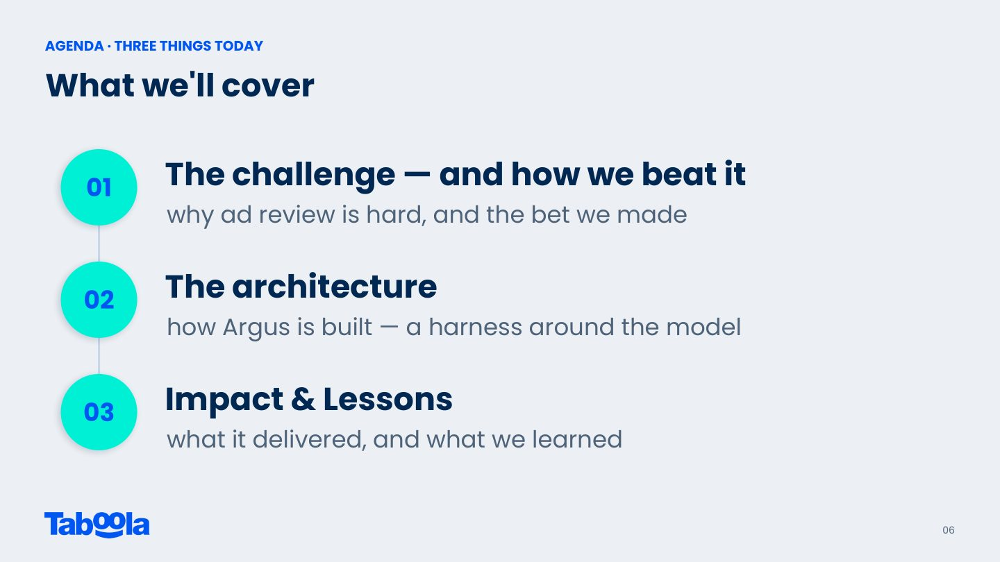
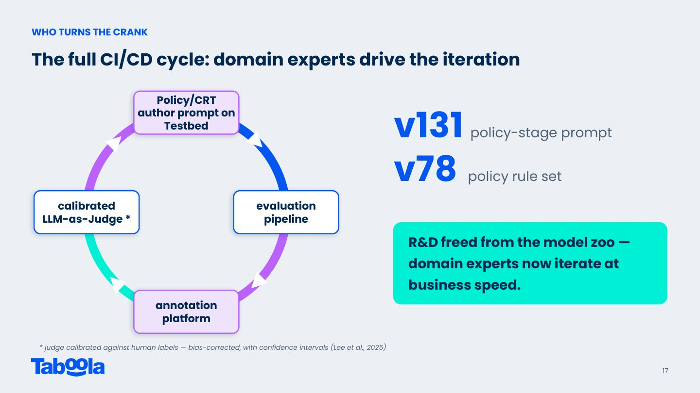

摘要
本演講分享 Taboola 如何打造名為 Argus 的大規模 LLM 生產管線，以應對每日全球數百萬則廣告審查的嚴苛挑戰。為解決人工審查一致性差、時效性低（等待期長達一日以上）及傳統機器學習在多模態、頻繁變動政策下維護成本高昂的痛點，團隊提出「政策即 Prompt」的創新理念。Argus 核心採用五層 Harness 架構：控制流層將審核拆為對應人工步驟的9個階段；上下文層利用 Prompt Assembler 依屬性動態組裝版本化規則；工具層賦予 Agentic AI 呼叫網路與圖片搜尋進行事實查核的能力；記憶層透過 Class-RAG 注入歷史相似判例以少樣本學習提升準確率；CI/CD 層則以黃金數據集進行回歸測試作為品質與釋出關卡。該系統不僅將審查縮短至分鐘級、減少75%人工工作量，更於實戰中成功「行進間換引擎」至 Gemini 3 Flash，達成30%成本優化與無痛回滾。
重點整理
- 人工審查廣告面臨一致性(審核標準不一)、時效性(廣告主需等待1天以上)、規模化(各市場/語言知識需持續重訓)三大痛點
- 核心洞見是將「政策」轉化為「Prompt」：領域專家可直接更新規則Prompt，不需要R&D重新訓練模型
- Argus採用Harness架構，將控制流拆成9個對應人工審查步驟的階段，每個階段皆可獨立稽核、測試與替換模型
- 透過CI/CD層以golden dataset做regression testing，並以品質、成本、延遲作為Release Gate，2026年2月成功將模型從GPT-4o換成Gemini 3 Flash，成本降低30%
- 上線後審查時間從12小時縮短到分鐘級，人力工作量減少75%，審查一致性較人工審查提升13個百分點
重點圖片／架構圖




為什麼要審查廣告內容
Taboola作為連接廣告主、平台與出版商的橋樑，服務超過11K個全球出版商與18K個全球廣告主，每日活躍用戶超過6億。由於每一則廣告都會在正式上架前經過審查，講者以一則誇大療效的廣告為例，說明審查者需要判斷「宣稱是否可驗證」「圖片版權是否合法」「連結導向何處」等問題，凸顯內容審查對信任的重要性。
兩個問題，一個機會：為何人工與傳統ML都難以擴展
人工審查存在三大痛點：一致性（不同審查者甚至同一人前後判斷不一）、時效性（廣告主需等待超過一天才能上線）、規模化（各市場與語言的知識需要在每次政策更新時重新培訓）。而在LLM出現之前，團隊嘗試以傳統ML playbook（如Safety v1、IAB分類器、廣告類型分類、縮圖分類器與數十條規則）應對，卻因為任務具多模態且高度依賴上下文、標籤不可信、以及政策持續變動而導致AI審查覆蓋率偏低，逐一維護的模型動物園難以為繼。
從傳統ML到LLM的重新框架
講者提出的解方是重新定義問題：多模態且高度依賴上下文的任務，正好符合LLM可原生讀取文字與圖片、並動態載入上下文的特性；面對不可信的標籤，判斷不再依賴微調而是來自Prompt本身；面對持續變動的政策，領域專家可以直接更新Prompt而不需要R&D參與，也就是「政策 = 一段英文Prompt」。
Argus的Harness架構
講者以「模型是引擎，Harness是車身」比喻Argus的設計理念，整體架構由五層構成：控制流層將9個階段對應到人工審查的工作流程（Master、Pre-Policy、Fact-Checking、Policy、LP Policy、Combine、Rejection Explanation、Approve、Final），每個階段皆可獨立稽核、測試與替換模型；上下文層透過Prompt Assembler，依照內容類型、內容領域、政策領域與活動地區等標籤動態組裝政策Prompt，並將規則存於版本化資料庫中，以減少Token用量並提高準確度；工具層則是Agentic設計，讓LLM在遇到需要證據佐證的宣稱（如「FDA核准」）時主動呼叫search_web、search_image等自研工具，確保Argus可自由更換底層模型而不受特定廠商工具綁定；記憶層以In-Context Learning方式，在推論時注入近似案例的過往審查決定（近似「Class-RAG」的做法），以Few-shot方式提升準確度與一致性；CI/CD層則將Prompt視為程式碼，任何Prompt或模型的變更都需經過以golden dataset執行的評估流程，並以品質、成本、延遲作為Release Gate通過與否的依據。
換模型實戰與成效
2026年2月，團隊在Argus生產環境中完成一次「行進中換引擎」的實戰：先用所有候選模型跑一輪評估，接著將線上模型從GPT-4o換成Gemini 3 Flash，換模後整體成本降低30%，過程中監控發現有兩個IAB分類出現過度拒絕的情況，團隊透過zero-code設定進行單一分類的回滾，再重新調校並重新上線，全程如同F1賽車進站換胎。整體成效顯示，審查時間從12小時縮短到分鐘級，所有英文廣告均可交由Argus審查，人工審查工作量減少75%，審查一致性較人工提升13個百分點；此外，可解釋的拒絕理由也帶動廣告主重新提交比人工審查多出約2倍、最終再獲核准的比例則多出1.5倍。講者總結三個建議：複製人工工作流程以獲得可靠性與可稽核性、讓領域專家主導Harness的迭代、並以CI/CD層作為R&D與領域專家順暢協作的關鍵。